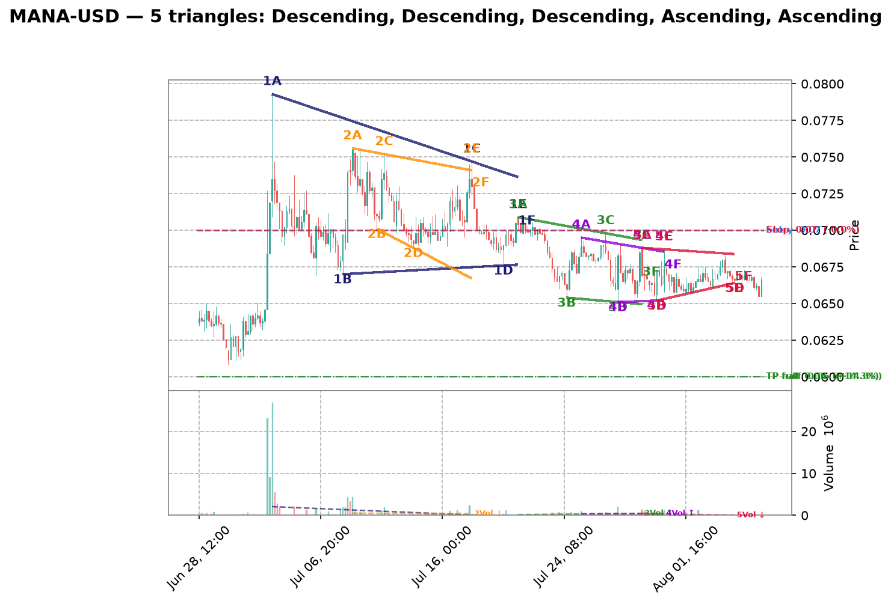
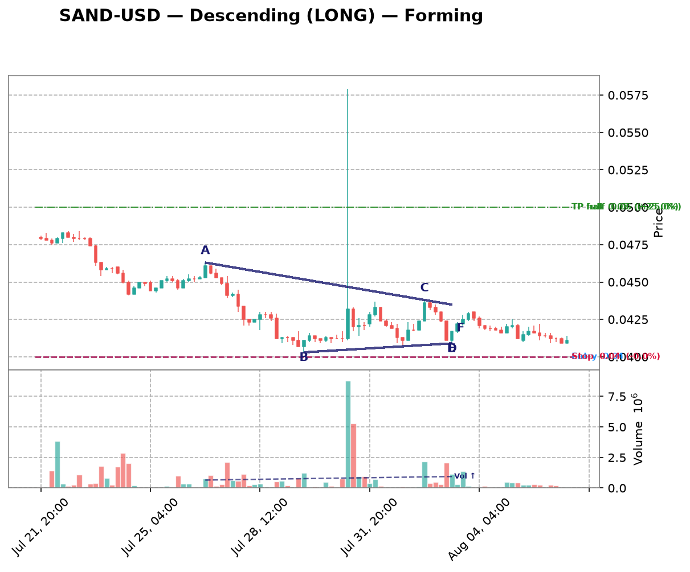
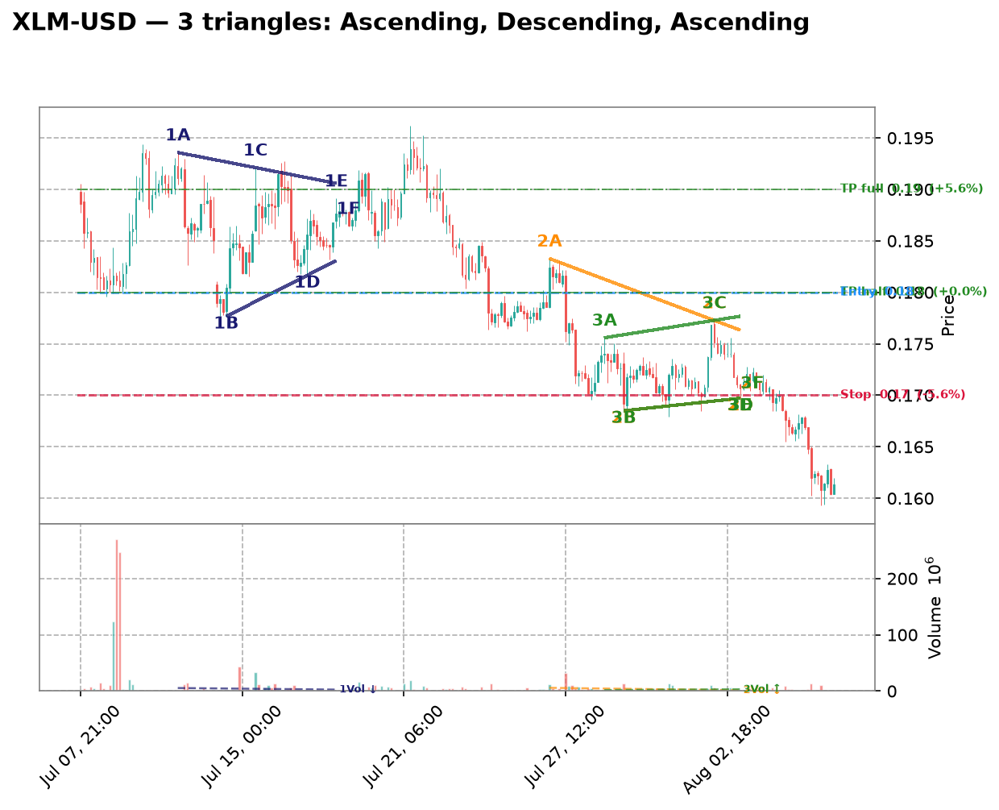
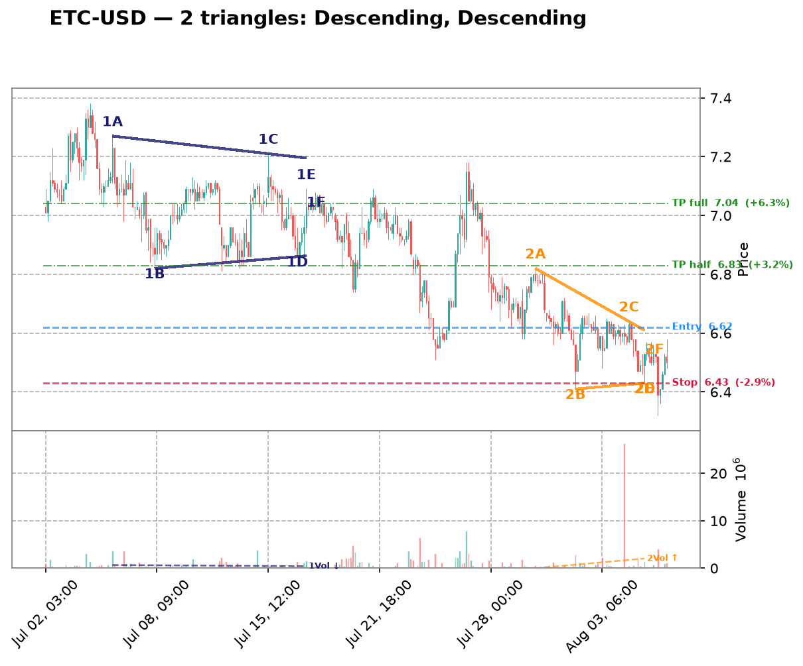
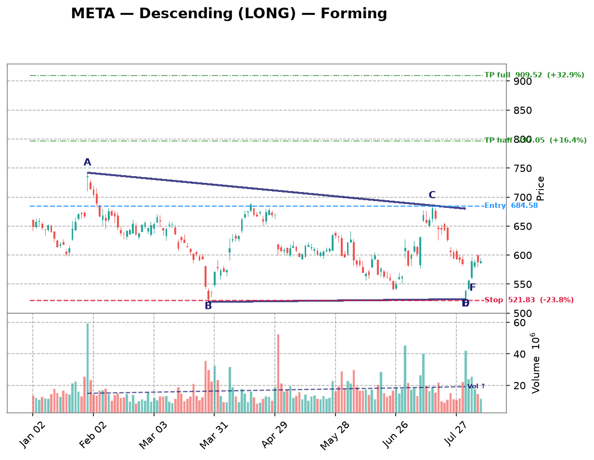
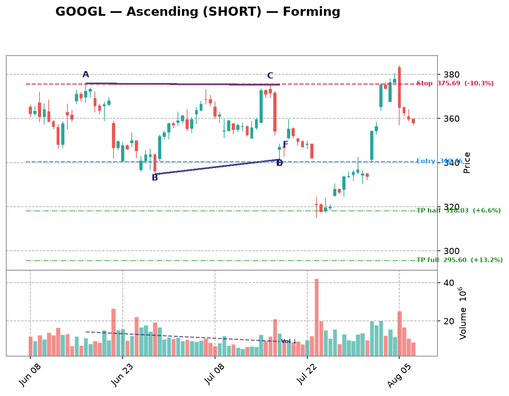
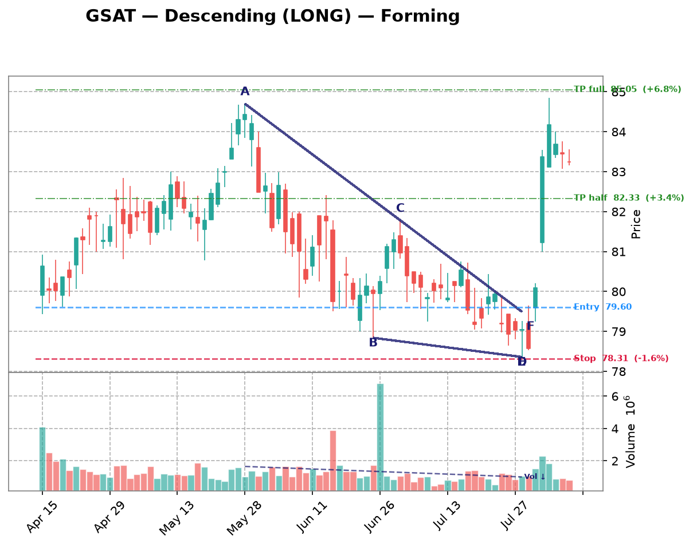
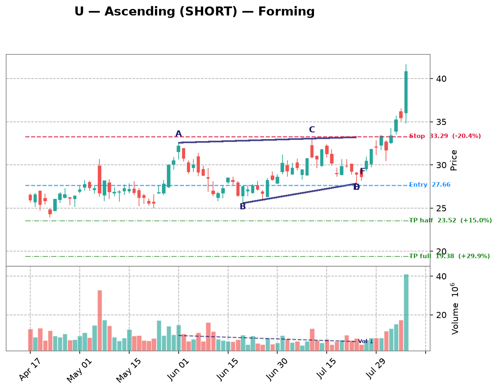
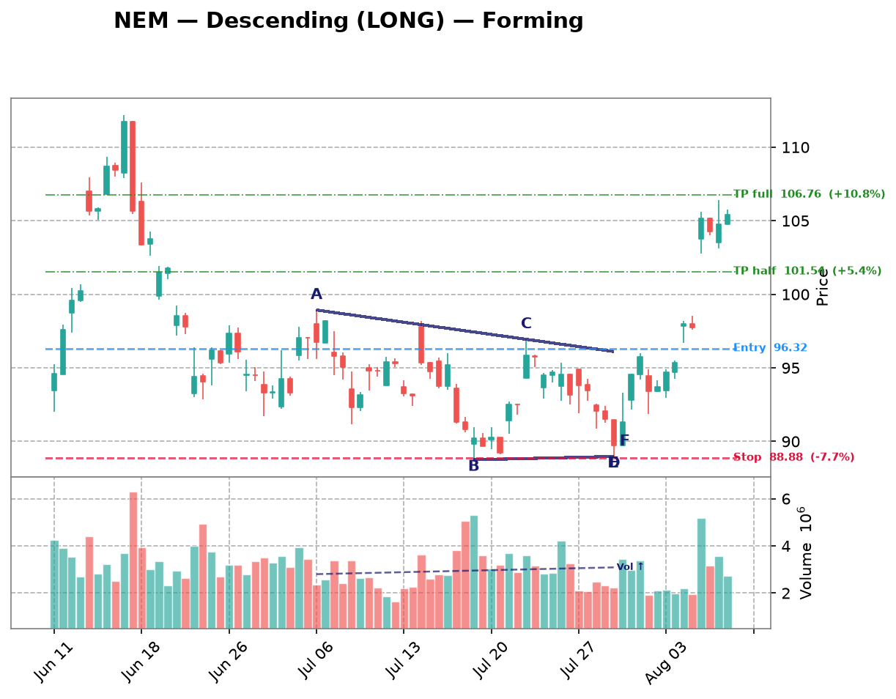
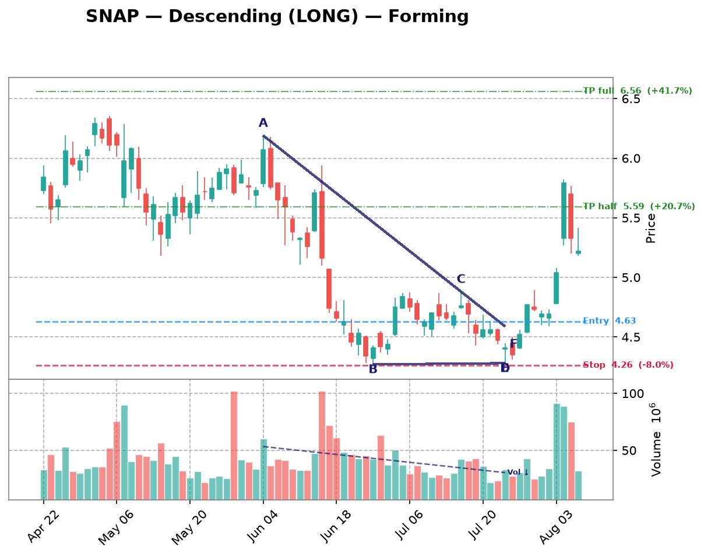

| Date | Symbol | TF | Pattern | Dir | Verdict | Claude Pattern | Claude Dir | Conf | Rec |
|---|---|---|---|---|---|---|---|---|---|
| crypto 10 patterns | |||||||||
| 2026-09-27 | DOGE-USD | 1d | Descending | LONG | Disputed | ? | ? | Certainty: 82 | — |
Chart  Claude Notes The right edge of the chart shows a strong sustained downtrend from June through early August, with price falling from ~0.09 to ~0.07 in a steady stairstep decline, followed by a flat consolidation around 0.07 with very tight, low-volatility candles. There's no clear rising support line contacting multiple higher lows against a flat resistance - instead price simply flattened out at the bottom after a downtrend. This looks more like a bottoming/consolidation zone or flag rather than a descending triangle with a proper converging upper trendline of lower highs. Volume is also declining steadily, consistent with consolidation rather than a defined triangle squeeze. I don't see two distinct converging trendlines with multiple touches - the 'highs' in the last few weeks are essentially flat, not descending, contradicting the descending triangle upper boundary requirement. This appears to be a flat-bottom consolidation, not a credible descending triangle setup for a LONG breakout. Presence certainty 82/100 — how sure Claude is that its found/not-found call is correct | |||||||||
| 2026-09-27 | XRP-USD | 1d | Descending | LONG | Disputed | ? | ? | Certainty: 78 | — |
Chart  Claude Notes The right side of the chart (Jun-Aug) shows price in a fairly flat, choppy range between roughly 1.0 and 1.2 with no clear convergence - highs and lows are both roughly horizontal (a rectangle/consolidation rather than a triangle). There's no series of clearly lower highs compressing toward a rising or flat support line; support around 1.0-1.05 has held multiple times but resistance near 1.15-1.20 hasn't been declining in a convergent stair-step fashion. This looks more like range-bound consolidation after a downtrend rather than a descending triangle with a well-defined descending upper trendline. I don't see a tightening apex forming near the right edge, so I disagree with the algorithm's flag. Presence certainty 78/100 — how sure Claude is that its found/not-found call is correct | |||||||||
| 2026-09-27 | ETH-USD | 1d | Symmetric | SYMMETRIC | Disputed | ? | ? | Certainty: 78 | — |
Chart  Claude Notes The right side of the chart (Jul 14 onward) shows price consolidating in a tight, roughly flat range between ~1830 and ~1950, not a converging triangle. There's no clear narrowing structure - highs and lows are both fairly flat/parallel rather than converging toward an apex. This looks more like a flat consolidation/rectangle after a strong bounce from the ~1550 lows in June, rather than a symmetric triangle. The algorithm's flag is likely a false positive - there aren't clear diverging or well-defined trendlines converging to a point; price action is choppy and range-bound with similar highs and lows repeating rather than compressing progressively. Presence certainty 78/100 — how sure Claude is that its found/not-found call is correct | |||||||||
| 2026-09-27 | VET-USD | 1d | Descending | LONG | Disputed | ? | ? | Certainty: 75 | — |
Chart  Claude Notes The right side of the chart (late June through late July) shows price consolidating in a tight, roughly flat range between ~0.0044 and ~0.0050 with no clear directional convergence - both upper and lower bounds are essentially horizontal, forming a rectangle/range rather than a descending triangle. A descending triangle requires a clearly falling upper resistance line with a flat lower support; here the highs are not making a consistent lower-high sequence, they're oscillating sideways. This looks more like consolidation/basing after a steep prior downtrend (Apr-Jun sell-off) rather than a triangle with defined converging trendlines. Volume is also declining but that alone doesn't confirm a triangle without clear trendline structure. Presence certainty 75/100 — how sure Claude is that its found/not-found call is correct | |||||||||
| 2026-09-27 | SOL-USD | 1d | Symmetric | SYMMETRIC | Both agree | Symmetric | SYMMETRIC | Quality: 45 | monitor |
Chart  Claude Notes From late June through late July, price shows some compression: highs decline from ~83 (late June) to ~78 (mid-July) to ~74-75 (late July), while lows rise slightly from ~70-72 (early July) toward ~72-73 (late July). This gives a mild converging structure with roughly 3 touches on the upper side and 2-3 on the lower side. However, the range is fairly narrow and choppy rather than a crisp wedge, and the most recent candles look like they're consolidating near the apex/support (~73-74) without a clear breakout yet. It's a plausible but low-quality symmetric triangle rather than a textbook one — could also just be range-bound consolidation. Symbol Research Solana (SOL) is a high-throughput layer-1 blockchain used for DeFi, NFTs, and payments, competing with Ethereum on speed/cost. It has seen strong developer activity and periodic network outages historically, with price highly correlated to broader crypto liquidity cycles and BTC/ETH trends. Market Sentiment neutral Presence certainty 55/100 — how sure Claude is that its found/not-found call is correct Pattern quality 45/100 — how clean/tradable this specific triangle is Research confidence 55/100 — Phase B research conviction Supporting Signals
Opposing Signals
| |||||||||
| 2026-09-27 | MANA-USD | 4h | Ascending | SHORT | Disputed | ? | ? | Certainty: 78 | — |
Chart  Claude Notes The right side of the chart (late July into August) shows price trading in a fairly flat, choppy range around 0.065-0.068 with no clear rising lower trendline or flat upper resistance converging into an apex. Highs and lows are roughly horizontal (a rangebound consolidation rather than a converging wedge). There's no consistent pattern of higher lows against a flat top - lows are essentially flat/slightly declining. This looks more like sideways consolidation/noise than an ascending triangle. I disagree with the algorithm's flag; the compression and touch-point structure needed for a credible ascending triangle isn't present near the right edge. Presence certainty 78/100 — how sure Claude is that its found/not-found call is correct | |||||||||
| 2026-09-27 | SAND-USD | 4h | Descending | LONG | Disputed | ? | ? | Certainty: 68 | — |
Chart  Claude Notes Price fell sharply from ~0.0485 to ~0.0425 in late July, then has been trading in a fairly flat, choppy range between roughly 0.0410-0.0440 since Jul 29, with no clear narrowing of highs and lows into an apex. There's no consistent descending upper trendline (highs bounce around 0.0425-0.0440 without a clean lower-high sequence) and the lower boundary is also roughly flat rather than rising. This looks more like a horizontal consolidation/range than a converging descending triangle. The algorithm likely mistook the flat range and a couple of lower highs for a descending triangle, but the touches are not clean enough (highs are inconsistent, no real convergence toward an apex) to call this a credible triangle setup. Presence certainty 68/100 — how sure Claude is that its found/not-found call is correct | |||||||||
| 2026-09-27 | XLM-USD | 3h | Descending | LONG | Disputed | ? | ? | Certainty: 85 | — |
Chart  Claude Notes The right side of the chart shows a clear, sustained downtrend from ~0.195 down to ~0.160 with lower highs and lower lows in a fairly steady decline, not a converging ascending triangle. There's no flat resistance line or rising support line with higher lows near the right edge - instead price is making consistently lower lows (0.175->0.170->0.165->0.160) without any basing/flattening pattern. This looks like a clean downtrend/breakdown rather than a compression pattern. The algorithm likely misread the general price decay as a triangle, but there's no clear apex or converging trendlines visible near the current price action. Presence certainty 85/100 — how sure Claude is that its found/not-found call is correct | |||||||||
| 2026-09-27 | ETC-USD | 3h | Descending | LONG | Disputed | ? | ? | Certainty: 82 | — |
Chart  Claude Notes The chart shows a clear, sustained downtrend from early July (~7.4) to early August (~6.4-6.6) with a series of lower highs and lower lows, not a converging consolidation. The right edge shows price flattening slightly around 6.4-6.6 but this is only 1-2 touches and lacks a clearly defined descending upper trendline with multiple lower highs converging toward a flat support - it looks more like a temporary pause/consolidation at the bottom of a downtrend rather than a triangle with defined convergence. There's no clear apex forming; the recent candles are choppy and range-bound near the lows without a distinct narrowing wedge shape. I disagree with the algorithm's descending triangle flag - this looks like trend continuation/consolidation at support rather than a classic triangle pattern with 3+ touches on both a falling resistance and flat support line. Presence certainty 82/100 — how sure Claude is that its found/not-found call is correct | |||||||||
| 2026-09-27 | VET-USD | 3h | Ascending | SHORT | Disputed | ? | ? | Certainty: 78 | — |
Chart Claude Notes The right side of the chart shows a choppy sideways range between roughly 0.00463 and 0.00478, but there is no clear convergence between highs and lows - the recent candles (Aug 03-06) show a decline from ~0.00478 down to ~0.00463 with no rising support line forming higher lows. Instead, lows are roughly flat to slightly declining, and highs are also declining, which looks more like a mild downtrend/consolidation than an ascending triangle. There's no evidence of a flat resistance with rising support - the algorithm's ascending triangle call doesn't match the visual structure. This looks more like random consolidation or a slight descending drift rather than a credible triangle with clean touch points on both sides. Presence certainty 78/100 — how sure Claude is that its found/not-found call is correct | |||||||||
| crypto-equity 5 patterns | |||||||||
| 2026-09-27 | MSTR | 3h | Descending | LONG | Disputed | ? | ? | Certainty: 65 | — |
Chart Claude Notes The right side of the chart (mid-late July to Aug) shows a choppy sideways range roughly between 92-100, but there's no clear convergence — highs and lows are both oscillating within a fairly constant band rather than compressing toward an apex. There's no consistent flat support line or descending resistance line with multiple clean touches; price action looks more like range-bound consolidation/noise than a descending triangle. The algorithm likely mistook the general downtrend from mid-June combined with recent chop as a descending triangle, but the recent candles (late July-Aug) actually show slightly higher lows and higher highs, which contradicts a descending triangle structure. I don't see a credible triangle forming near the right edge. Presence certainty 65/100 — how sure Claude is that its found/not-found call is correct | |||||||||
| 2026-08-09 | MSTR | 1h | Ascending | SHORT | Disputed | ? | ? | Certainty: 78 | — |
Chart  Claude Notes The right-side price action (late Aug 5 into Aug 6) shows a decline from ~99 to ~96.5 with lower highs and lower lows together — this looks like a mild downtrend/pullback rather than a converging triangle with a rising support line. There's no clear rising trendline of higher lows; instead both highs and lows are declining in tandem, more consistent with a small descending channel or simple retracement than an ascending triangle. No flat resistance line is visible either (highs are dropping from ~99 to ~97.5 to ~97). I don't see the two clearly converging trendlines required for a valid triangle at the right edge, so I disagree with the algorithm's ascending triangle / short flag. Presence certainty 78/100 — how sure Claude is that its found/not-found call is correct | |||||||||
| 2026-08-09 | CIFR | 1h | Descending | LONG | Disputed | ? | ? | Certainty: 78 | — |
Chart  Claude Notes The chart shows a series of large swing oscillations (roughly 26->18->24->17->26->18->25->18) rather than a converging structure. Each swing has similar amplitude, indicating a broad trading range/downtrend with volatility rather than a narrowing triangle. Near the right edge, price is declining from ~25 to ~18-19 with no flattening support line or clear lower highs converging into an apex - the recent candles show a steady downward slide, not compression. There is no consistent horizontal support with descending highs; the swings are too wide and repetitive to qualify as a descending triangle. I disagree with the algorithm's flag - this looks like continued range-bound/down-trending price action, not a triangle nearing apex. Presence certainty 78/100 — how sure Claude is that its found/not-found call is correct | |||||||||
| 2026-08-09 | MARA | 1h | Descending | LONG | Disputed | ? | ? | Certainty: 78 | — |
Chart  Claude Notes {
"found_triangle": false,
"pattern_type": null,
"direction": null,
"presence_confidence": 78,
"pattern_quality": null,
"notes": "The chart shows an overall downtrend with successive lower highs (15, 14, 13, 12.7, 12) and lower lows (12, 11.8, 10.7, 10, 10.7), forming a descending staircase rather than a converging triangle. There's no flat/horizontal support line - the lows are also declining, not holding at a consistent level. At the right edge, price is consolidating in a tight range around 10.7-12 but without clear evidence of a rising lower boundary or flat lower support meeting a descending upper trendline with 3+ touches each. This looks more like a broader downtrend with intermittent consolidation than a well-defined descending triangle. The algorithm's flag is plausible given the recent narrowing range, but the lower boundary isn't flat - it's still sloping down, making this more consistent with a bearish channel/flag than a classic descending triangle setup for a LONG bias, which would typically need a firm horizontal support.",
} Presence certainty 78/100 — how sure Claude is that its found/not-found call is correct | |||||||||
| 2026-08-09 | IREN | 1h | Symmetric | SYMMETRIC | Disputed | ? | ? | Certainty: 72 | — |
Chart  Claude Notes The chart shows a broad downtrend from late June (~57) into a choppy bottoming/ranging structure from mid-July through early August, oscillating between roughly 30 and 44 with multiple swing highs and lows of similar magnitude - more like a wide horizontal range than a converging wedge. Near the right edge (early August), price is bouncing between ~37-41 without clear narrowing of highs and lows; recent candles show similar range width to prior weeks rather than compression toward an apex. I don't see two clearly converging trendlines with consistent touch points - the swing highs (44, 43, 41) and lows (33, 30, 36) don't form a tight symmetric convergence, they look more like a rounded/ranging base. I disagree with the algorithmic flag; this looks more like consolidation/basing after a downtrend rather than a well-defined symmetric triangle. Presence certainty 72/100 — how sure Claude is that its found/not-found call is correct | |||||||||
| mega-cap 4 patterns | |||||||||
| 2026-09-27 | AMZN | 1d | Descending | LONG | Disputed | ? | ? | Certainty: 85 | — |
Chart  Claude Notes The right side of the chart shows a sharp rally from ~232 to ~287, followed by a pullback to ~272-282, not a converging triangle. There's no clear flat support with lower highs converging - instead we see a strong impulsive move up (large green candles with volume spike) followed by only 3-4 candles of consolidation, which is too few touch points to establish a valid triangle. This looks more like a breakout/pullback pattern after a downtrend bottomed around 227-232, not a descending triangle formation. The algorithm likely misread the brief consolidation at the peak as a triangle, but there's insufficient price history at this new level to confirm converging trendlines. Presence certainty 85/100 — how sure Claude is that its found/not-found call is correct | |||||||||
| 2026-09-27 | NVDA | 1d | Descending | LONG | Disputed | ? | ? | Certainty: 80 | — |
Chart  Claude Notes The right side of the chart shows a sharp V-shaped reversal from ~190 (late July low) to a strong rally into early August (200->220+), not a converging triangle. There's no flat support with lower highs converging - instead price made a low around Jul 30 and then broke out strongly upward with expanding range, not compressing. No clear descending upper trendline with multiple touches, and no flat support being tested repeatedly. This looks like a completed downtrend followed by a breakout/reversal rally, not a triangle consolidation. The algorithm's descending triangle flag appears to be a false positive - there's insufficient basing/consolidation structure with the required touch points on both sides before the recent breakout. Presence certainty 80/100 — how sure Claude is that its found/not-found call is correct | |||||||||
| 2026-09-27 | META | 1d | Descending | LONG | Disputed | ? | ? | Certainty: 72 | — |
Chart  Claude Notes The right side of the chart shows a choppy, range-bound structure oscillating between roughly 590-690 with no clear convergence. There's a sharp drop to ~525 in early August followed by a bounce back to ~590, then consolidation - but the highs and lows aren't forming clean converging trendlines. The recent price action looks more like a wide trading range or a failed bounce attempt rather than a descending triangle. A descending triangle needs a flat support line with lower highs compressing into it - here the lows are actually quite volatile (525 to 600 range) rather than flat, and the 'highs' near 650-690 don't show a consistent declining trendline with multiple clean touches. This looks more like general consolidation/noise after a downtrend rather than a well-defined triangle pattern. Presence certainty 72/100 — how sure Claude is that its found/not-found call is correct | |||||||||
| 2026-09-27 | GOOGL | 4h | Ascending | SHORT | Disputed | ? | ? | Certainty: 82 | — |
Chart  Claude Notes The right side of the chart shows a sharp rally from ~320 to ~382, followed by a two-candle pullback to ~357-365. This is far too brief and one-sided to constitute a triangle - there's no clear convergence between an upper resistance line and a rising support line with multiple touch points. What the algorithm likely flagged as 'ascending triangle' is simply the steep uptrend into a peak followed by early pullback candles, not a consolidation/compression structure. There are only 2-3 candles after the peak, insufficient to establish two converging trendlines with the required touch points. This looks more like a potential reversal or minor pullback after a strong impulsive move, not a triangle formation. Presence certainty 82/100 — how sure Claude is that its found/not-found call is correct | |||||||||
| semiconductors 3 patterns | |||||||||
| 2026-09-27 | ADI | 4h | Descending | LONG | Disputed | ? | ? | Certainty: 72 | — |
Chart Claude Notes The chart shows a clear downtrend from late June through late July (from ~430 to ~355), followed by a modest bounce and sideways consolidation in the last ~10 candles (roughly 370-385 range). There is no clear descending resistance line with multiple lower highs converging against a flat support - the recent price action looks more like a small basing/consolidation range after a downtrend rather than a defined triangle with 2+ touches per trendline. The algorithm likely misread the recent narrow-range consolidation as a triangle apex, but there isn't enough distinct touch structure (especially on the upper resistance side) to confidently draw converging trendlines. This looks more like a potential reversal/basing pattern than a descending triangle. Presence certainty 72/100 — how sure Claude is that its found/not-found call is correct | |||||||||
| 2026-08-09 | LRCX | 1h | Ascending | SHORT | Disputed | ? | ? | Certainty: 72 | — |
Chart  Claude Notes The right-side price action (early Aug) shows a choppy range between roughly 305-320, but there's no clear ascending support line—lows are flat/noisy (around 305-308) rather than making distinct higher lows, and the highs are also roughly flat (~315-320) rather than converging. This looks more like a horizontal consolidation/rectangle than a true ascending triangle. The algorithm likely flagged minor higher-low bumps, but there aren't 2-3 clean touch points forming a rising trendline distinct from a flat one. Prior to this, price action from mid-July was a clear downtrend with lower highs/lower lows, not a triangle. Given the ambiguity of the recent consolidation, I lean toward rejecting the triangle call, though a loose case for a shallow ascending structure isn't impossible. Presence certainty 72/100 — how sure Claude is that its found/not-found call is correct | |||||||||
| 2026-08-09 | AMAT | 1h | Symmetric | SYMMETRIC | Disputed | ? | ? | Certainty: 72 | — |
Chart  Claude Notes The right side of the chart shows a rally from ~500 to ~555 followed by a pullback to ~530, but this looks like a rounded top / pullback within a broader swing rather than a converging triangle. There's no clear sequence of lower highs meeting higher lows - the recent candles (Aug 03-08) show a peak around 555 then a fairly sharp drop to 530, which is more consistent with a short-term downtrend or consolidation than a symmetric wedge. I don't see at least two clean, roughly parallel converging trendlines with multiple touches on each side near the apex. The algorithm may be reacting to the general narrowing of range after the spike, but the touch points are too few and inconsistent to confirm a genuine symmetric triangle. Presence certainty 72/100 — how sure Claude is that its found/not-found call is correct | |||||||||
| forex 2 patterns | |||||||||
| 2026-08-09 | EURUSD=X | 1h | Ascending | SHORT | Disputed | ? | ? | Certainty: 82 | — |
Chart  Claude Notes The right side of the chart shows a clear downtrend from the Aug 5 peak (~1.156) into Aug 6, with lower highs and lower lows in a fairly consistent decline, followed by a flattening/consolidation near 1.1525-1.153. There's no clear rising support line with higher lows to form an ascending triangle - instead price dropped sharply and is now consolidating in a narrow range without a defined converging structure. The algorithm's ascending triangle call doesn't fit since there's no series of higher lows visible; the recent price action looks more like a sharp decline stabilizing at a new lower level rather than a triangle compression. Not enough touch points on both an upper and lower trendline to confirm any triangle pattern near the apex on the right edge. Presence certainty 82/100 — how sure Claude is that its found/not-found call is correct | |||||||||
| 2026-08-09 | NZDUSD=X | 1h | Ascending | SHORT | Disputed | ? | ? | Certainty: 78 | — |
Chart  Claude Notes The right side of the chart shows price consolidating in a choppy range between ~0.5865 and ~0.590 after a strong impulsive rally from late July. However, this looks more like a flat/rectangular consolidation than an ascending triangle - the highs are roughly flat (~0.590) but the lows are also fairly flat/choppy (~0.5865-0.587), not showing a clear rising sequence of higher lows. There's no clean converging trendline structure - both boundaries appear roughly horizontal rather than one flat and one rising. This resembles sideways consolidation or a minor pullback/flag after the breakout rather than a textbook ascending triangle with rising support. The algorithm's flag seems to be picking up on the tightening range but the specific 'rising lower trendline' criterion for ascending triangle isn't clearly satisfied here. Presence certainty 78/100 — how sure Claude is that its found/not-found call is correct | |||||||||
| hardware 2 patterns | |||||||||
| 2026-09-27 | DELL | 1d | Ascending | SHORT | Disputed | ? | ? | Certainty: 75 | — |
Chart  Claude Notes The right side of the chart shows a choppy consolidation/uptrend with wide-ranging candles oscillating between roughly 370 and 480, but there's no clear convergence of highs and lows into an apex. Highs are not forming a flat or descending resistance line (e.g., 465, 455, 435, 470, 460, 485 - inconsistent), and lows are irregular (400, 375, 405, 385, 360, 400). This looks more like a volatile range/channel than a converging triangle. The algorithm's ascending triangle call isn't supported - there's no flat top being tested multiple times with rising lows; instead price is making higher highs and higher lows in a broader uptrend with noise, not compression. Presence certainty 75/100 — how sure Claude is that its found/not-found call is correct | |||||||||
| 2026-08-09 | STX | 1h | Descending | LONG | Disputed | ? | ? | Certainty: 72 | — |
Chart  Claude Notes The right-side price action (Aug 03–06) shows a choppy, roughly flat range between ~815 and ~890 with no clear convergence — highs and lows are similarly spaced throughout rather than narrowing toward an apex. There's a sharp downside wick near Aug 06 breaking below the recent range low (~780), which argues against a clean descending triangle setup (support was violated, not respected). I don't see a consistent flat support line with lower highs converging into it; instead it looks like sideways consolidation/noise with one outlier spike down. Not enough clean touch points on both a flat lower line and a descending upper line to call this a credible descending triangle. Presence certainty 72/100 — how sure Claude is that its found/not-found call is correct | |||||||||
| space 2 patterns | |||||||||
| 2026-09-27 | GSAT | 1d | Descending | LONG | Disputed | ? | ? | Certainty: 82 | — |
Chart  Claude Notes The chart shows a broad downtrend from late May peak (~84.5) down to late July lows (~78.7), then a sharp breakout gap up in early August to ~84-85 with a small pullback. There's no clear convergence between an upper resistance line and a flat lower support line - the price action from late May to July is a general decline with lower highs and lower lows, not compression into an apex. The recent move is a strong impulsive breakout candle followed by minor consolidation (3-4 candles), which is too little price action to confirm a triangle structure. This looks more like a sharp reversal/breakout after a downtrend rather than a triangle pattern forming. The algorithm may have misread the descending highs from May-July as a triangle leg, but there's no corresponding flat/rising support line to complete the pattern - lows kept dropping until early August. Presence certainty 82/100 — how sure Claude is that its found/not-found call is correct | |||||||||
| 2026-09-27 | SPCE | 4h | Descending | LONG | Disputed | ? | ? | Certainty: 68 | — |
Chart Claude Notes The chart shows a strong downtrend from early June (~$6) into a bottoming/basing phase around $2.5-3.0 from early July through early August, followed by a modest recent uptick. This is not a descending triangle - there's no clear flat support line with lower highs converging into it. Instead, price action from mid-July to early August looks like a flat, choppy consolidation/base (roughly $2.5-2.9 range) with no consistent descending upper trendline - highs and lows both look fairly flat/random in that zone. The last few candles show a breakout to the upside (~$2.9-3.0) with higher lows, which is more indicative of an already-completed base and breakout rather than a still-forming triangle. There isn't a clear series of lower highs compressing toward a flat support to justify a descending triangle label. The recent price action suggests basing and upward breakout, not further compression. Presence certainty 68/100 — how sure Claude is that its found/not-found call is correct | |||||||||
| adtech 1 pattern | |||||||||
| 2026-09-27 | U | 1d | Ascending | SHORT | Disputed | ? | ? | Certainty: 88 | — |
Chart  Claude Notes The chart shows a clear uptrend from late June through early August, culminating in a strong breakout with a large green candle and volume spike at the right edge. There is no evidence of a converging triangle structure - no flat resistance line being tested multiple times, no series of higher lows compressing against a ceiling. Instead price consolidated in a rounded bottom (Jun-Jul) then accelerated upward with expanding range candles, which is the opposite of a converging/compressing pattern. The algorithm's ascending triangle flag appears to be a false positive - this is a breakout/momentum continuation, not a pre-breakout compression pattern. There's no apex to speak of since price already broke out decisively with increasing volume. Presence certainty 88/100 — how sure Claude is that its found/not-found call is correct | |||||||||
| commodities 1 pattern | |||||||||
| 2026-09-27 | NEM | 4h | Descending | LONG | Disputed | ? | ? | Certainty: 78 | — |
Chart  Claude Notes The chart shows a clear V-shaped decline from ~112 in mid-June down to a low near 89-90 around Jul 17-19, followed by a steady recovery/uptrend into early August reaching ~105. There's no compression or converging trendlines visible at the right edge - instead price is trending upward in a fairly linear fashion with normal pullbacks. The algorithm's 'descending triangle' call doesn't hold up: there's no flat support line with lower highs converging into it. Recent candles (late July into August) show higher lows and higher highs, more consistent with an uptrend continuation than a triangle consolidation. No credible two-line convergence pattern is visible near the right edge. Presence certainty 78/100 — how sure Claude is that its found/not-found call is correct | |||||||||
| fintech 1 pattern | |||||||||
| 2026-09-27 | SOFI | 1d | Descending | LONG | Disputed | ? | ? | Certainty: 72 | — |
Chart  Claude Notes The right side of the chart shows a sharp V-shaped reversal: price plunged from ~18 to ~15 in early Aug, then spiked back up to ~18.7 within just a few candles. This is a rapid impulsive move, not a converging consolidation. There's no evidence of a flat support line with lower highs converging toward it - only two candles exist after the low, which is insufficient to establish either a resistance or support trendline with multiple touches. The algorithm likely mistook the choppy price action from June-July (which oscillated between ~17-19.5) as a descending triangle, but that range was more of a broad consolidation/channel than a clean converging pattern, and it has already been invalidated by the sharp breakdown and V-reversal at the far right edge. No credible triangle structure is currently forming. Presence certainty 72/100 — how sure Claude is that its found/not-found call is correct | |||||||||
| industrials 1 pattern | |||||||||
| 2026-08-09 | RCL | 1h | Ascending | SHORT | Disputed | ? | ? | Certainty: 80 | — |
Chart  Claude Notes The right side of the chart shows price oscillating in a fairly flat range between ~318 and ~330 after a strong impulsive rally from late July. There's no clear rising lower support line - the recent lows (~320-322) are roughly flat or even slightly declining, not making higher lows as required for an ascending triangle. The highs are also roughly flat (~328-330) rather than converging with the lows. This looks more like a consolidation/range or minor pullback after a strong uptrend rather than a converging triangle. I don't see two clear trendlines converging toward an apex - the pattern lacks the compression structure needed. Disagreeing with the algorithm's ascending triangle flag; the structure is closer to a flat consolidation/rectangle than a triangle with rising support. Presence certainty 80/100 — how sure Claude is that its found/not-found call is correct | |||||||||
| internet 1 pattern | |||||||||
| 2026-09-27 | SNAP | 1d | Descending | LONG | Disputed | ? | ? | Certainty: 82 | — |
Chart  Claude Notes The chart shows a downtrend from late April into mid-June, then a period of consolidation/base-building around 4.3-5.0 from mid-June through late July, followed by a sharp breakout gap-up in early August. There's no clear descending resistance line with lower highs converging on a flat support - the mid-June to July period looks more like a rounded/flat base than a triangle. Price already broke out sharply upward (large green candle around Aug 1) before the current small red candles, so any compression pattern would already be resolved/broken, not currently forming. The algorithm's descending triangle call doesn't hold up since the recent price action shows an impulsive breakout followed by minor pullback, not price still contained within converging trendlines near an apex. Presence certainty 82/100 — how sure Claude is that its found/not-found call is correct | |||||||||